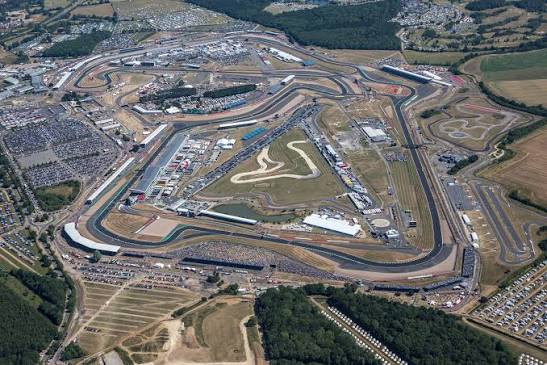

Circuitos mas destacados

Monaco
El Circuito de Monaco es uno de los mas famosos de la Formula 1. Se corre por las calles de Monte Carlo y es conocido por ser un circuito estrecho y dificil.

Silverstone
Silverstone es uno de los circuitos mas importantes de la Formula 1. Fue sede del primer Gran Premio del Campeonato Mundial en 1950.

Monza
El circuito de Monza es uno de los mas antiguos de la Formula 1. Es conocido por sus largas rectas y por las altas velocidades que alcanzan los pilotos.